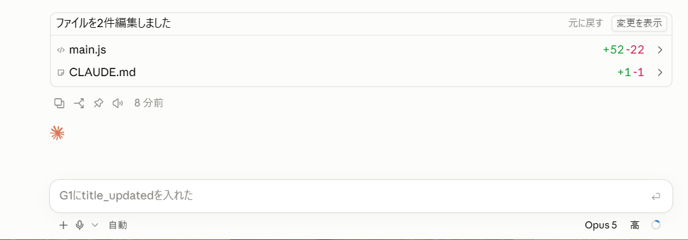
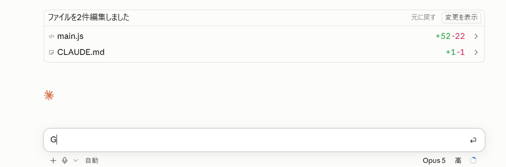
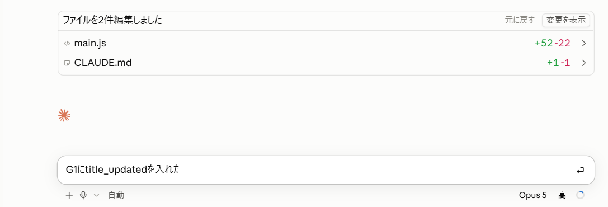

前回の記事で、AIの返事をずっとスクショで渡していた話を書きました。その最後に「もう一つ、知っていれば一瞬だった機能があります」と予告していたのが、今回の話です。
入力欄に、グレーの文字が出ている
Claude Codeでアプリを作っていると、AIの返事が終わったあと、入力欄にうっすらとグレーの文字が出ていることがあります。

これは「次はこう返事しませんか?」という、AIからの提案です。
この画面の直前、AIからは「スプレッドシートの見出しの右端に、title_updatedという列を1つ書き足してください」と頼まれていました。私が次に打つであろう「G1(のセル)に入れました」という報告を、AIが先回りして用意してくれていたわけです。
短い提案なら、覚えて打てばいい。でも……
私はこのグレーの文字を、「お手本」だと思っていました。見ながら自分で同じように打つものだ、と。
提案が「③へ」くらいの短いものなら、それで困りません。見て覚えて、自分で打てば済みます。
困るのは、提案が長いときです。英数字の名前が混ざった長い文を、見比べながら打ち直すのは面倒ですし、打ち間違いも起きます。
しかも、自分で打ち始めると、グレーの提案は消えてしまいます。

お手本を見ながら打つつもりが、1文字目でお手本がなくなる。「これ、どうやって入力するものなんだろう?」と、Claudeに聞いてみました。
答えは「Tabキー」でした
グレーの提案が出ている状態でTabキーを押すと、提案がそのまま入力欄に入る。それが答えでした。
試してみると、本当にグレーの文字が黒に変わりました。あとはEnterキーを押すだけで送信できます。

Tabで取り込んだあとは普通の入力と同じなので、少し書き足したり、言い回しを直したりもできます。
ちなみに、提案が出ている状態でいきなりEnterキーを押すと、提案がそのまま送信されるそうです。便利な反面、中身を確かめずに送ってしまうことにもなるので、長い提案のときは、いったんTabで取り込んで読んでから送るほうが安心です。
グレーの提案の受け取り方
- そのままでよければ:Tabで取り込んで、Enterで送信
- 少し直したければ:Tabで取り込んでから、書き足してEnter
- 使わないなら:気にせず自分で打ち始める(提案は消えます)
日本語入力の人は、スペースを押す
正直に言うと、「Tabを押す」という発想はまったくありませんでした。
日本語を入力するとき、私たちはスペースキーで変換して、Enterで確定します。グレーの候補が出たら「スペースかEnterで決める」というのが、長年の手の感覚です。Tabキーは、表計算で隣のセルに移るときくらいしか使っていませんでした。
一方、Tabで補完するのは、プログラマーの世界では昔からの当たり前だそうです。ターミナルでファイル名を途中まで打ってTabを押すと残りが補われる。コードを書くソフトでグレーの候補が出たら、Tabで確定する。Claude Codeも、その作法に合わせて作られているわけです。
同じ「グレーの候補」でも、日本語入力の人とエンジニアとでは、受け取るキーが違う。文系の私がつまずいたのは、たぶんそこでした。
「え?知らなかったんですか?」
エンジニアの人と話していたら、きっとそういう顔をされていたと思います。
でも、その人たちも最初は誰かに教わったか、たまたま押して気づいたかのどちらかのはずです。当たり前になりすぎて、説明しようとも思わない。だからこそ、つまずいた本人の目線で残しておく意味があると思っています。
前回のコピーボタンも、今回のTabキーも、知ってしまえば一瞬のことでした。文系営業の「知らなかった」は、たぶん同じ場所で誰かも立ち止まっています。そういう小さなつまずきを、これからもここに記録していきます。